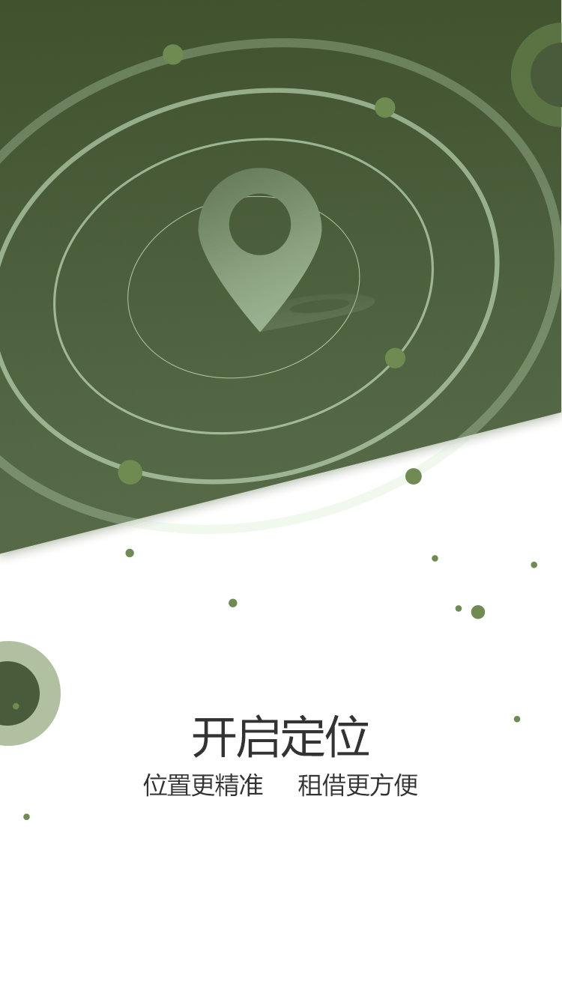

<!--
  Generated template for the SlidesPage page.

  See http://ionicframework.com/docs/components/#navigation for more info on
  Ionic pages and navigation.
-->

<!--  引导页   -->
<ion-content class="tutorial-page">
  <ion-slides pager>
    <ion-slide *ngFor="let slide of slides">
      <!-- <ion-toolbar>
        <ion-buttons end>
          <button ion-button color="primary">Skip</button>
        </ion-buttons>
      </ion-toolbar> -->
      
      <!-- <h2 class="slide-title" [innerHTML]="slide.title"></h2>
      <p [innerHTML]="slide.description"></p> -->
    </ion-slide>
    <ion-slide>
      
      <!-- <button ion-button large clear icon-end color="primary">开始使用</button> -->
      <button ios-button class="btn-start" (click)="gologin()">START&ensp;NOW</button>
    </ion-slide>
  </ion-slides>
  
</ion-content>
